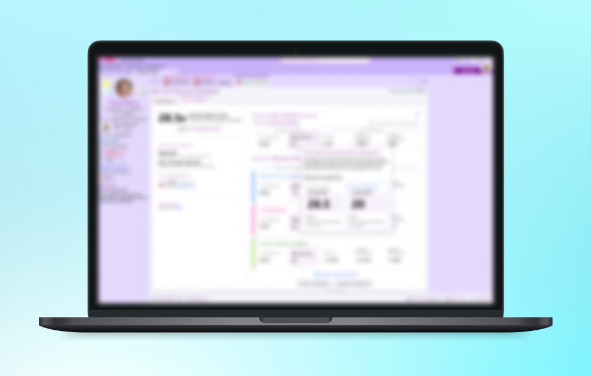

Clarifying Complex Clinical Decisions

what is it?
I worked on Epic’s “Best Care Choices for My Patient” feature, helping improve how users understand and interact with the tool, especially in less straightforward situations.
what did I do?
I was the sole designer on this project, working with a developer partner. I ran design sprints, facilitated critique sessions, and talked directly with clinicians to better understand their needs. I also helped host a webinar with 70+ users, giving me the opportunity to engage with real clients and learn more about their experiences and wants for the product.
takeaways
This was a really valuable experience in learning how to design for an existing product and work within an established team. I got to conduct user research with real clients, talk directly with clinicians, and see how their feedback could inform design decisions. It was a great opportunity to learn how to improve an existing feature rather than starting from scratch!
I can’t share too much about this project publicly, but I’d love to talk about it more in-depth over a call. Send me a message at kateshih@utexas.edu!